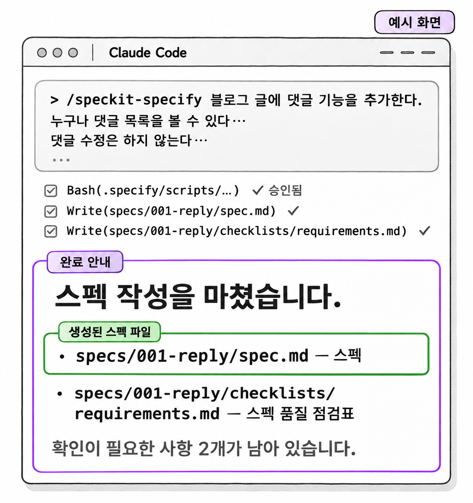
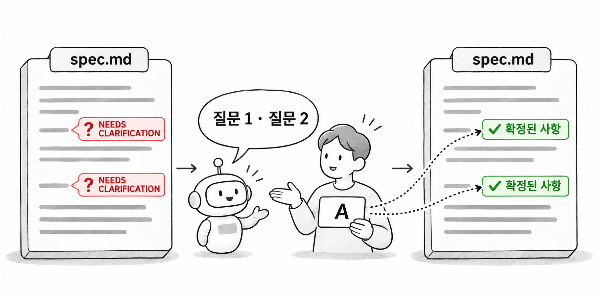
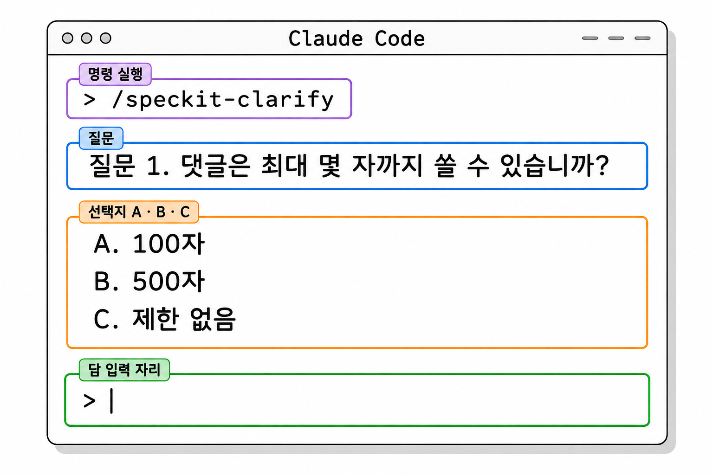

7장. 스펙이란?
1. /speckit-specify로 스펙 만들기
1.1 기술 없이 요구 쓰기
/speckit-specify는 만들 기능을 평소 말로 설명하는 명령입니다. 에이전트는 그 설명을 템플릿에 맞춰 스펙(spec, 명세) 문서로 풀어 씁니다. 3장에서 본 것처럼 스펙은 "무엇을, 왜" 만드는지에 답하는 층입니다. 그래서 입력하는 문장에도 사용자가 무엇을 할 수 있고 결과가 어떻게 되는지만 적습니다. 어떤 클래스와 라이브러리를 쓸지는 적지 않습니다.
이 명령은 Claude Code의 대화창에 입력합니다. 명령 뒤에 쓴 문장 전체가 에이전트에게 전달되므로, 여러 줄로 나눠 써도 됩니다.
기본 문법
/speckit-specify 만들 기능에 대한 설명댓글 기능을 설명할 때 아래 두 문장을 비교해 봅시다.
| 기술을 적은 문장 | 기술 없이 쓴 문장 |
|---|---|
| ReplyController에 POST 메서드를 추가하고 JWT로 사용자를 확인한다 | 댓글은 로그인한 사용자만 쓸 수 있다 |
| ReplyService에서 작성자 id를 비교해 ForbiddenException을 던진다 | 댓글은 쓴 사람만 삭제할 수 있다 |
왼쪽 문장은 개발자만 맞는지 판단할 수 있습니다. 오른쪽 문장은 기획자도 읽고 "글 작성자도 지울 수 있어야 하는데요"라고 고칠 수 있습니다. 스펙을 기술 없이 쓰는 이유가 여기에 있습니다. 기술 선택과 떼어서 요구가 맞는지만 검토할 수 있습니다.
1.2 범위 밖과 바뀌면 안 되는 것 적기
이미 운영 중인 프로젝트에 기능을 더할 때는 원하는 것만 적어서는 부족합니다. 두 가지를 함께 적습니다.
첫째는 범위 밖, 곧 이번에 하지 않을 것입니다. 적지 않으면 에이전트는 "댓글 기능이라면 수정도 있어야겠지"라고 추측해 수정 기능까지 만듭니다. 2장에서 본 "추측으로 채우기"가 스펙 단계에서도 똑같이 일어납니다.
둘째는 바뀌면 안 되는 것입니다. 새 기능 때문에 기존 기능의 동작이 달라지면 안 됩니다. 바뀌면 안 되는 것이 스펙에 적혀 있어야 나중에 성공 기준으로 이어지고, 구현 뒤에 무엇을 확인할지가 정해집니다.
예제 7-1 — 댓글 기능 스펙 만들기
파일명: 없음(Claude Code 대화창에 입력)
/speckit-specify 블로그 글에 댓글 기능을 추가한다.
누구나 글의 댓글 목록을 볼 수 있다. 댓글 쓰기는 로그인한 사용자만 할 수 있다.
댓글은 그 댓글을 쓴 사람만 삭제할 수 있다. 다만 글 작성자는 자기 글에 달린 댓글을 누가 썼든 삭제할 수 있다.
이번 범위에서 댓글 수정은 하지 않는다.
회원가입, 로그인, 내 정보 조회는 지금의 동작과 응답 형식을 그대로 유지해야 한다.실행 결과
에이전트가 명령 파일의 지시대로 보조 스크립트를 실행하려 하면 1장에서 배운 명령 실행 승인 요청이 뜹니다. 실행할 명령이 .specify 폴더 안의 스크립트인지 확인하고 승인합니다. 이어서 파일 생성 승인을 거치면 다음 파일이 생깁니다.
| 생성된 파일 | 내용 |
|---|---|
specs/001-reply/spec.md | 스펙 |
specs/001-reply/checklists/requirements.md | 스펙 품질 점검표 |
5장에서 말했듯 기능 폴더 이름은 에이전트가 설명을 보고 정하므로 001-reply가 아닐 수 있습니다. 이 책은 001-reply로 부릅니다. Git 저장소에서 실행했을 때 기능 브랜치도 함께 만드는지는 버전과 설정에 따라 다릅니다 [확인 필요]. 실행 뒤 git branch로 현재 브랜치를 확인합니다.
checklists/requirements.md는 /speckit-specify가 스스로 만드는 스펙 품질 점검표입니다. 스펙에 기술이 섞이지 않았는지, 확인이 필요한 사항이 남았는지 같은 항목을 에이전트가 점검한 결과가 들어 있습니다.

생성형 예시 · 실제 실행 안 함
1.3 생성된 spec.md 읽기
다섯 문장을 입력했지만 spec.md는 훨씬 길게 나옵니다. 에이전트가 템플릿의 목차에 맞춰 문장을 시나리오, 요구사항, 성공 기준 같은 칸으로 나눠 풀어 썼기 때문입니다. 아래는 그중 이 장에서 다룰 부분만 옮긴 것입니다. 실제 파일의 제목과 순서는 템플릿을 따르므로 이와 다를 수 있고, 제목이 영어로 나올 수도 있습니다.
코드 조각
## 사용자 시나리오
1. 로그인한 사용자가 글에 댓글을 쓰면 그 글의 댓글 목록 맨 뒤에 추가된다.
2. 로그인하지 않은 방문자는 댓글 목록을 볼 수 있지만, 댓글을 쓰려고 하면 거부된다.
3. 사용자는 자기 댓글을 삭제할 수 있다. 다른 사람의 댓글을 삭제하려고 하면 거부된다.
4. 글 작성자는 자기 글에 달린 댓글이면 다른 사람이 쓴 것도 삭제할 수 있다.
## 성공 기준
- 로그인하지 않고 보낸 댓글 쓰기 요청은 모두 거부된다.
- 권한이 없는 삭제 요청은 모두 거부된다.
- 댓글 기능을 추가한 뒤에도 기존 테스트 16개가 모두 통과한다.
## 범위 밖
- 댓글 수정
- 댓글에 대한 답글
## 확인이 필요한 사항
- [NEEDS CLARIFICATION] 댓글은 최대 몇 자까지 쓸 수 있는가?
- [NEEDS CLARIFICATION] 삭제된 댓글은 목록에서 사라지는가, 삭제되었다는 표시가 남는가?이 문서에서 볼 곳은 세 군데입니다.
먼저 입력한 문장이 어디로 갔는지 봅니다. "로그인한 사용자만 쓸 수 있다"는 시나리오 1, 2와 성공 기준 첫 줄로 나뉘어 들어갔습니다. "지금의 동작을 유지해야 한다"는 문장은 "기존 테스트 16개가 모두 통과한다"는 성공 기준이 되었습니다. 5장에서 .\gradlew test로 확인한 그 테스트입니다.
다음으로 "확인이 필요한 사항"을 봅니다. [NEEDS CLARIFICATION]은 입력만으로 정할 수 없는 부분에 에이전트가 붙이는 표시입니다. 한 줄로 지시했을 때는 에이전트가 이런 부분을 말없이 추측으로 채웠습니다. 이번에는 템플릿과 명령 파일이 추측 대신 표시를 남기라고 요구하므로 빈칸이 눈에 보입니다.
마지막으로 문서 전체에 Reply, JPA, ForbiddenException 같은 단어가 없다는 점을 확인합니다. 이런 단어가 보이면 2.4에서 다룰 실수가 생긴 것입니다.
2. spec.md 검토하기
spec.md 검토는 SDD 전체 흐름에서 가장 중요한 검토입니다. 이후의 계획, 작업 목록, 코드가 모두 이 문서를 기준으로 만들어지므로, 여기서 놓친 문제는 뒤로 갈수록 고치는 비용이 커집니다. 틀린 곳은 spec.md를 직접 고치거나, 대화창에서 에이전트에게 고칠 내용을 말해 고치게 합니다.
검토할 항목과 이 예제에서 확인한 결과는 다음과 같습니다.
| 확인할 것 | 이 예제에서 확인한 결과 |
|---|---|
| 빠진 시나리오가 없는가 | 없는 글에 댓글을 쓰는 경우가 빠졌다 |
| 성공 기준을 측정할 수 있는가 | "기존 테스트 16개 통과"는 명령 하나로 확인된다 |
| 말하지 않은 내용을 지어내지 않았는가 | 입력에 없던 항목이 있으면 지운다 |
| 범위 밖이 맞게 적혔는가 | 댓글 수정이 범위 밖에 있다 |
2.1 빠진 시나리오 찾기
에이전트는 입력한 문장에서 시나리오를 만듭니다. 그래서 입력에서 말하지 않은 경우, 특히 실패하는 경우가 자주 빠집니다. 시나리오마다 "대상이 없으면?", "권한이 없으면?", "입력이 비었으면?"을 물어보면 빠진 것을 찾기 쉽습니다.
이 예제에서는 존재하지 않는 글에 댓글을 쓰는 경우가 빠졌습니다. 이 경우를 정하지 않으면, 구현 단계에서 에이전트가 오류를 무시하고 저장할지 요청을 거부할지를 추측으로 정합니다. 대화창에 다음처럼 말해 시나리오를 더합니다.
예제 7-2 — 빠진 시나리오 추가하기
파일명: 없음(Claude Code 대화창에 입력)
spec.md의 사용자 시나리오에 다음을 추가해 줘.
존재하지 않는 글에 댓글을 쓰려고 하면 거부된다.
존재하지 않는 댓글을 삭제하려고 하면 거부된다.실행 결과
파일 수정 승인 요청이 뜹니다. 바뀌는 파일이 specs/001-reply/spec.md 하나인지 확인하고 승인하면 시나리오 목록 끝에 다음 두 줄이 더해집니다.
5. 존재하지 않는 글에 댓글을 쓰려고 하면 거부된다.
6. 존재하지 않는 댓글을 삭제하려고 하면 거부된다."거부된다"까지만 적고 몇 번 상태 코드로 응답할지는 적지 않았습니다. 상태 코드와 예외 클래스는 헌법의 응답 규칙을 따라 계획 단계에서 정합니다.
2.2 측정할 수 있는 성공 기준
성공 기준은 구현이 끝났을 때 "됐다"와 "안 됐다"를 가르는 문장입니다. 사람마다 판단이 달라지는 문장은 성공 기준으로 쓸 수 없습니다. 6장에서 헌법 조항을 판별할 수 있는 문장으로 쓴 것과 같은 원리입니다.
| 측정할 수 없는 문장 | 측정할 수 있는 문장 |
|---|---|
| 댓글 기능이 안정적으로 동작한다 | 권한이 없는 삭제 요청은 모두 거부된다 |
| 기존 기능에 영향을 주지 않는다 | 기존 테스트 16개가 모두 통과한다 |
| 댓글 목록이 빠르게 나온다 | (기준이 꼭 필요하면) 댓글 100개인 글의 목록이 1초 안에 응답된다 |
왼쪽 문장이 보이면 "무엇을 확인하면 이 문장이 참인지"를 묻고 오른쪽처럼 바꿉니다. 이 예제의 "기존 테스트 16개가 모두 통과한다"는 .\gradlew test 한 번으로 확인할 수 있으므로 좋은 성공 기준입니다.
2.3 지어낸 내용 지우기
에이전트는 템플릿의 칸을 채우려다 입력에 없던 요구를 덧붙이기도 합니다. "댓글 신고 기능", "댓글 좋아요", "댓글 작성 시 글 작성자에게 알림" 같은 항목이 대표적입니다. 그럴듯해 보여도 우리가 정한 요구가 아닙니다.
이런 항목을 그대로 두면 계획과 작업 목록에 반영되어 코드까지 만들어집니다. 입력한 다섯 문장과 spec.md를 나란히 놓고, 입력에 근거가 없는 요구는 지웁니다. 다음에 만들 생각이 있는 기능이라면 지우는 대신 범위 밖으로 옮겨 둡니다.
2.4 흔한 실수 — 기술 적기와 여러 기능 넣기
첫 번째 실수는 스펙에 기술을 적는 것입니다. "JPA로 댓글을 저장한다", "Redis로 댓글 목록을 캐시한다" 같은 문장입니다. 입력에 이런 말을 넣으면 에이전트는 그대로 스펙에 옮깁니다. 기술은 8장의 plan 단계에서 정합니다. 그래야 기술 선택이 헌법과 맞는지를 plan.md의 헌법 점검에서 따로 확인할 수 있습니다.
두 번째 실수는 /speckit-specify 한 번에 여러 기능을 넣는 것입니다. 예를 들어 "댓글 기능과 글 검색 기능을 추가한다"를 한 번에 입력하는 경우입니다. 스펙 하나가 커지면 검토할 시나리오가 많아지고, 뒤에 이어지는 작업 목록도 한 번에 검토하기 어려울 만큼 길어집니다. /speckit-specify 한 번에는 기능 하나만 다룹니다. 글 검색은 댓글 기능을 끝낸 뒤 따로 실행해 002- 폴더로 만듭니다.
3. clarify — 질문으로 빈칸 메우기(선택)
3.1 /speckit-clarify 실행하기
/speckit-clarify는 에이전트가 spec.md를 읽고 덜 정해진 부분을 질문하게 하는 명령입니다. 사용자가 답하면 에이전트가 그 답을 spec.md에 다시 적어 넣습니다. 한 번 실행할 때 질문은 최대 다섯 개입니다. 더 정할 것이 남았으면 다시 실행합니다.
그림 7-1은 spec.md의 빈칸이 질문과 답을 거쳐 확정되는 흐름입니다.

기본 문법
/speckit-clarify
/speckit-clarify 집중할 영역명령 뒤에 아무것도 쓰지 않으면 에이전트가 스펙 전체에서 질문거리를 고릅니다. "권한과 입력 검증에 집중해 줘"처럼 영역을 덧붙이면 그 영역에서 질문을 고릅니다.
예제 7-3 — 댓글 스펙의 빈칸 질문받기
파일명: 없음(Claude Code 대화창에 입력)
/speckit-clarify실행 결과
에이전트가 질문을 하나씩 보여 주고 답을 기다립니다. 질문의 문장과 선택지는 실행할 때마다 다를 수 있습니다.
질문 1. 댓글은 최대 몇 자까지 쓸 수 있습니까?
A. 100자
B. 500자
C. 제한 없음
질문 2. 삭제된 댓글은 목록에서 어떻게 보입니까?
A. 목록에서 완전히 사라진다
B. "삭제된 댓글입니다"라는 문구가 남는다두 질문 모두 A로 답합니다. 답을 마치면 파일 수정 승인을 거쳐 spec.md에 확정된 내용이 적히고, 그만큼 [NEEDS CLARIFICATION] 표시가 사라집니다.
## 확정된 사항
- 댓글은 1자 이상 100자 이하이다. 이 범위를 벗어나면 댓글 쓰기가 거부된다.
- 삭제된 댓글은 목록에서 완전히 사라진다.clarify는 선택 단계지만 건너뛰지 않기를 권합니다. 그림 7-1의 물음표가 남은 채로 다음 단계로 가면, plan 단계에서 에이전트가 그 자리를 추측으로 채웁니다. 계획, 작업 목록, 코드가 모두 그 추측 위에 쌓이므로 나중에 바로잡기가 어렵습니다.

생성형 예시 · 실제 실행 안 함
3.2 기존 코드와 데이터를 근거로 답하기
clarify의 질문에 답할 때는 취향이 아니라 기존 코드와 데이터를 근거로 삼습니다. 이 예제에서 100자를 고른 근거는 기존 Reply 엔티티입니다. 6장에서 확인했듯 Reply 엔티티와 reply_tb 테이블은 이미 있고, 댓글 내용을 담는 comment 컬럼의 길이가 100으로 정해져 있습니다.
질문 2에서 A를 고른 근거도 같은 곳에 있습니다. reply_tb에는 삭제 여부를 기록할 컬럼이 없습니다. 지금 구조로는 행을 지우는 방식이 그대로 맞습니다.
모르는 질문이 나오면 에이전트에게 근거를 찾아 달라고 해도 됩니다. "Reply 엔티티의 comment 필드 길이를 확인해 줘"처럼 말하면 에이전트가 파일을 읽고 답해 줍니다. 근거를 확인한 뒤에 답을 고릅니다.
3.3 답 하나가 작업 범위를 바꾼다
질문 1에서 B(500자)를 골랐다고 해 봅시다. 스펙에는 숫자 하나만 바뀌지만, 구현에서는 reply_tb의 comment 컬럼 길이를 늘리는 작업이 따라붙습니다. Reply 엔티티를 고쳐야 하고, 운영 중인 데이터베이스라면 테이블 변경도 계획해야 합니다.
질문 2에서 B를 골라도 마찬가지입니다. "삭제된 댓글입니다"를 보여 주려면 행을 지우지 않고 삭제 여부를 기록해야 하므로 reply_tb에 컬럼이 하나 늘어납니다. 목록 조회도 삭제된 댓글을 다르게 보여 주도록 바뀝니다.
| 답 | 따라붙는 작업 |
|---|---|
| 1-A 100자, 2-A 완전 삭제 | 없음. 기존 Reply 엔티티와 reply_tb를 그대로 쓴다 |
| 1-B 500자 | Reply 엔티티와 comment 컬럼 길이 변경 |
| 2-B 삭제 표시 | 삭제 여부 컬럼 추가, 목록 조회 방식 변경 |
그래서 clarify에서 답을 고르는 일은 작업 범위를 정하는 일이기도 합니다. 꼭 필요한 요구라면 B를 골라도 됩니다. 다만 그 답이 어떤 작업을 끌고 오는지 알고 골라야 합니다.
4. checklist — 요구사항 문장 점검하기(선택)
4.1 /speckit-checklist 실행하기
/speckit-checklist는 요구사항 문장이 완전하고 명확하며, 서로 모순이 없는지 점검할 항목을 만들어 주는 명령입니다. 코드를 시험하는 테스트가 아니라 요구사항 문장을 시험하는 테스트라고 생각하면 됩니다. "권한이 없는 경우의 결과가 모든 시나리오에 정해져 있는가?" 같은 질문이 체크 항목으로 나옵니다.
기본 문법
/speckit-checklist 점검할 영역예제 7-4 — 권한 요구사항 점검표 만들기
파일명: 없음(Claude Code 대화창에 입력)
/speckit-checklist 댓글 쓰기와 삭제의 권한 요구사항실행 결과
specs/001-reply/checklists/ 폴더에 점검표 파일이 하나 더 생깁니다. 파일 이름은 점검 영역에 따라 에이전트가 정합니다 [확인 필요]. 내용은 다음과 같은 체크 항목입니다.
- [ ] 로그인하지 않은 사용자의 모든 동작(목록 보기 · 쓰기 · 삭제)에 대한 결과가 정해져 있는가?
- [ ] "글 작성자"와 "댓글 작성자"가 같은 사람일 때의 삭제 규칙이 정해져 있는가?
- [ ] 거부되는 경우마다 거부된다는 결과가 시나리오에 적혀 있는가?이 점검표의 체크는 사람이 합니다. spec.md를 읽고 항목이 충족되었다고 판단할 때만 [x]로 바꿉니다. 충족되지 않은 항목이 있으면 spec.md에 문장을 보태거나 /speckit-clarify를 한 번 더 실행합니다. 예를 들어 둘째 항목은 지금 스펙으로도 답을 이끌어 낼 수 있습니다(어느 쪽 규칙으로든 삭제할 수 있다). 그래도 그 답이 문장으로 적혀 있지 않다면 한 줄 더 적어 두는 편이 안전합니다.
4.2 checklist와 analyze의 차이
8장에서 배울 /speckit-analyze도 문서를 점검하는 선택 명령이라 checklist와 헷갈리기 쉽습니다. 둘은 보는 대상이 다릅니다.
| 명령 | 보는 것 | 결과 | 실행 시점 |
|---|---|---|---|
/speckit-checklist | 요구사항 문장 자체가 완전하고 명확한가 | 사람이 체크할 점검표 | spec.md를 쓴 뒤 |
/speckit-analyze | 스펙 · 계획 · 작업 목록이 서로 맞는가 | 누락과 모순을 담은 보고서 | tasks.md까지 만든 뒤 |
checklist는 문서 하나의 문장 품질을 보고, analyze는 여러 문서 사이의 어긋남을 봅니다. 그래서 checklist는 계획을 세우기 전에, analyze는 구현하기 전에 실행합니다.
5. 연습문제 — 스펙에 적을 문장 고르기
요구사항
- 다음 문장 여섯 개를 읽고 spec.md에 적을 문장과 plan.md에 적을 문장으로 나눕니다.
- 가. 로그인하지 않은 방문자는 댓글 목록을 볼 수 있지만 댓글을 쓸 수 없다
- 나. ReplyService가 권한을 검사하고 ForbiddenException을 던진다
- 다. 댓글 목록은 join fetch로 한 번에 조회한다
- 라. 존재하지 않는 글에 댓글을 쓰려고 하면 거부된다
- 마. ReplyRequest 클래스 안에 SaveDTO를 record로 추가한다
- 바. 댓글 기능을 추가한 뒤에도 기존 테스트 16개가 모두 통과한다
- 다음 성공 기준을 측정할 수 있는 문장으로 고쳐 씁니다. "댓글 삭제가 잘 동작한다"
- 다음 입력이 스펙 입력으로 왜 알맞지 않은지 한 문장으로 쓰고, 알맞게 나눠 씁니다. "/speckit-specify 댓글 기능과 댓글 신고 기능을 JPA로 추가한다"
완료 조건
- 1번에서 기술 이름(클래스 · 예외 · 조회 방식)이 들어간 문장은 모두 plan.md 쪽으로 분류되어 있습니다.
- 2번에서 고친 문장은 요청 하나를 보내거나 명령 하나를 실행해 참과 거짓을 가릴 수 있습니다.
- 3번의 답은 기능이 두 개인 것과 기술을 적은 것을 모두 지적하고,
/speckit-specify입력을 기능마다 하나씩, 기술 없이 다시 씁니다.